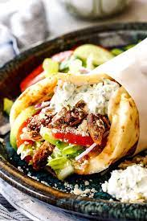

Chicken Gyros

Marinated greek chicken gyros in a greek flatbread with salad. Best served with chips.
Ingredients
For the chicken
- Chicken Thighs
- Olive Oil
- Lemon Juice
- Garlic
- Paprika
- Thyme
- Coriander
- Chilli Powder
For the dressings
- Tomato
- Cucumber
- Red Onion
- Lettuce
- Tzatziki
Method
- Combine all the ingredients for the chicken in a bowl and allow the chicken to marinate for as long as
possible.
- Using a frying pan on medium to high heat, cook both sides of the chicken until brown. Take care not to
overcrowd the pan, as this will prevent it from browning properly.
- Whilst the chicken is cooking chop the vegetables for the dressings.
- Towards the end of the chicken cooking, warm the flatbreads in the oven with the chips.